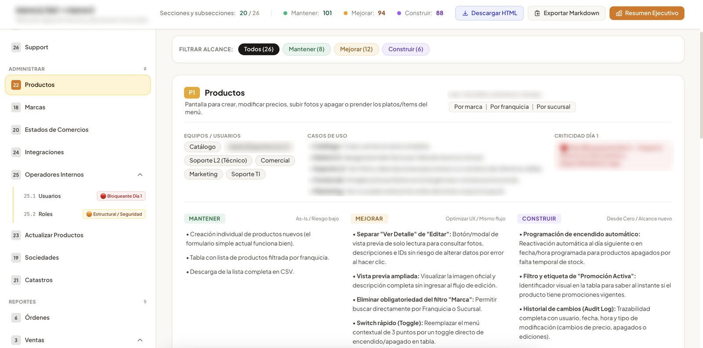
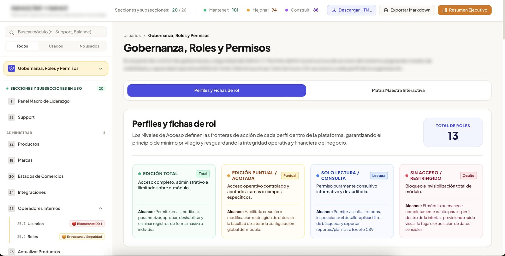
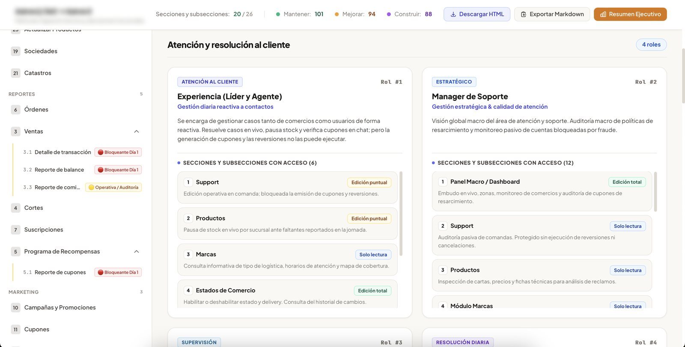

Caso 01 · Service Designer Ssr. · Monchis · 2026 Case 01 · Service Designer · Monchis · 2026
Plantear una migración del backoffice que no frene la operación. Planning a back-office migration that doesn't stop operations.
Un solo discovery para resolver dos retos a la vez: cómo migrar el backoffice interno de Monchis a una nueva plataforma unificada sin poner en riesgo las órdenes en vivo, y quién debería poder ver y editar qué. One discovery to solve two challenges at once: how to move Monchis' internal back office to a new unified platform without putting live orders at risk, and who should be able to see and edit what.
- RolRole
- Service Designer Ssr. · lideré y ejecuté el discoveryService Designer · led and ran the discovery
- EquipoTeam
- Service Design, con Producto y TecnologíaService Design, with Product and Engineering
- MétodoMethod
- Mesas de trabajo con 7 áreas, auditoría funcional, escenarios de migración y co-diseño con Producto y TecnologíaWorking sessions with 7 teams, functional audit, migration scenarios and co-design with Product and Engineering
- EntregableDeliverable
- Artefacto interactivo con el detalle de qué cambiar en cada módulo, roadmap de migración por olas y matriz de 13 roles × 4 niveles de permisoInteractive artefact detailing what to change in each module, wave-based migration roadmap and a 13 roles × 4 permission levels matrix
Contexto y retoContext and challenge
Un mandato corporativo y un sistema que nadie quería copiar tal cual.A corporate directive and a system nobody wanted to copy as it was.
Por decisión corporativa, el backoffice debía migrar a una nueva plataforma unificada. El reto era hacerlo sin poner en riesgo la operación diaria y aprovechar la migración para ordenar quién podía ver y editar qué.By corporate decision, the back office had to move to a new unified platform. The challenge was doing it without risking daily operations, and using the migration to sort out who could see and edit what.
Reto 01Challenge 01
Migrar sin copy-pasteMigrate without copy-paste
Replicar el sistema tal cual significaba llevar la deuda técnica a la nueva plataforma y arriesgar las órdenes en vivo.Replicating the system as-is meant carrying technical debt into the new platform and risking live orders.
Reto 02Challenge 02
Ordenar los accesosBring order to access
Casi todos los perfiles tenían visibilidad y edición total, con riesgo constante de alterar o exponer datos sensibles.Almost every profile had full visibility and editing rights, with a constant risk of altering or exposing sensitive data.
Proceso y mi aporteProcess and my role
Una sola investigación para resolver dos frentes en paralelo.One research effort to solve two tracks in parallel.
01
Discovery con 7 áreasDiscovery with 7 teams
Lideré y facilité las sesiones con los equipos que operan la plataforma a diario para entender usos, dolores y accesos.I led and facilitated sessions with the teams who use the platform daily to understand uses, pains and access needs.
02
Metodología de dos frentesTwo-track method
Diseñé la forma de relevar al mismo tiempo la deuda funcional de las pantallas y las necesidades de acceso de cada perfil.I designed a way to capture the screens' functional debt and each profile's access needs at the same time.
03
Escenarios y modelo futuroScenarios and future model
Traduje los hallazgos en escenarios de migración y en un nuevo modelo de roles y permisos.I turned the findings into migration scenarios and a new roles and permissions model.
04
Alineación con Producto y TecnologíaAlignment with Product and Engineering
Validé la propuesta con los líderes y construí el artefacto interactivo que condensa qué cambiar en cada módulo.I validated the proposal with leadership and built the interactive artefact detailing what to change in each module.
Hallazgos claveKey findings
Los números demostraron que copiar el sistema era inviable.The numbers proved that copying the system was not viable.
Un falso ordenA false sense of order
Roles creados, pero sin fronteras claras casi todos operaban como Super Admin.Roles existed, but without clear boundaries almost everyone worked as Super Admin.
Deuda UX visibleVisible UX debt
Cambios identificados entre mejoras y funcionalidades nuevas: un copy-paste no era opción.Changes identified across improvements and new features: a copy-paste was not an option.
Alcance depuradoA cleaner scope
Secciones que ningún equipo usaba y se pudieron descartar antes de construir.Sections no team used, which could be dropped before building.
Riesgo concentradoConcentrated risk
Secciones sostenían la operación en vivo y las usaban varios equipos a la vez.Sections held up live operations and were used by several teams at once.
SobreexposiciónOverexposure
operativos podían ver y editar información financiera y legal que no necesitaban.in operations could see and edit financial and legal data they didn't need.
PropuestaProposal
Dos propuestas para migrar con orden y seguridad.Two proposals to migrate safely and in order.
Propuesta 01Proposal 01
Migración por olas de riesgoMigration in risk waves
Planteé tres escenarios de migración: por olas de riesgo, por modo de uso y módulo a módulo. Recomendé el de olas porque era el de menor riesgo: empieza por lo que usa un solo equipo y tiene pocos cambios, y deja la operación en vivo para el final.I laid out three migration scenarios: by risk waves, by usage mode and module by module. I recommended the wave approach as the lowest-risk option: it starts with areas used by a single team with few changes, and leaves live operations for last.
Ola 1Wave 1
FacturaciónInvoicing
Ola 2Wave 2
LiquidacionesSettlements
Ola 3Wave 3
FidelizaciónLoyalty
Ola 4Wave 4
GestiónManagement
Ola 5Wave 5
Operación activaLive operations
Propuesta 02Proposal 02
De 43 roles a 13, con 4 niveles de accesoFrom 43 roles to 13, with 4 access levels
Un modelo de gobernanza basado en el mínimo privilegio: cada perfil accede solo a donde opera a diario, y cada sección tiene un nivel de permiso por rol.A least-privilege governance model: each profile only reaches where it works daily, and each section has a permission level per role.
Sin accesoNo access
El módulo queda oculto.The module is hidden.
Solo lecturaRead-only
Consultar, filtrar y exportar.View, filter and export.
Edición acotadaScoped editing
Cambios puntuales sin tocar la configuración.Specific changes, no global settings.
Edición totalFull editing
Crear, configurar y eliminar.Create, configure and delete.
El artefactoThe artefact
De las entrevistas a un entregable que Producto puede consumir.From interviews to a deliverable Product can actually use.
Con apoyo de IA convertí el discovery en un artefacto navegable: cada módulo del backoffice con su caso de uso, su criticidad y la decisión de qué mantener, mejorar o construir, junto con el modelo de roles y permisos.With AI support, I turned the discovery into a navigable artefact: every back-office module with its use case, criticality and the decision on what to keep, improve or build, together with the roles and permissions model.
Capturas con información sensible difuminada.Screenshots with sensitive information blurred.
- 01Sintetiza entrevistas con 7 áreas en una fuente de verdad.Condenses 7 teams’ interviews into one source of truth.
- 02Clasifica cada pantalla en mantener, mejorar o construir.Tags every screen as keep, improve or build.
- 03Sirve de base para que Producto escriba sus PRDs.Serves as the basis for Product to write its PRDs.



Entregables y próximos pasosDeliverables and next steps
Todo listo para que Producto diera el siguiente paso.Everything ready for Product to take the next step.
EntregadoDelivered
Insumos para decidir y diseñarInputs to decide and design
- Artefacto interactivo con qué cambiar en cada móduloInteractive artefact with what to change in each module
- Tres escenarios de migración con uno recomendadoThree migration scenarios with one recommended
- Modelo de 13 roles y matriz de permisos13-role model and permissions matrix
Próximos pasos propuestosProposed next steps
Lo que seguía para ProductoWhat came next for Product
- Elegir el escenario de migraciónChoose the migration scenario
- Diseñar la nueva arquitectura de informaciónDesign the new information architecture
- Planear los siguientes trimestresPlan the coming quarters